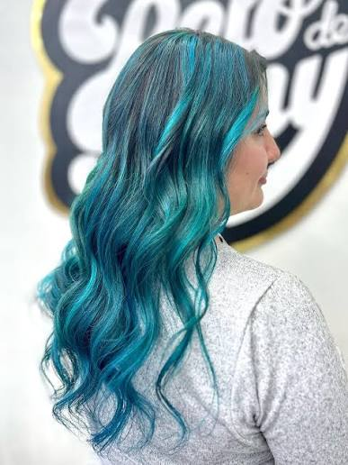
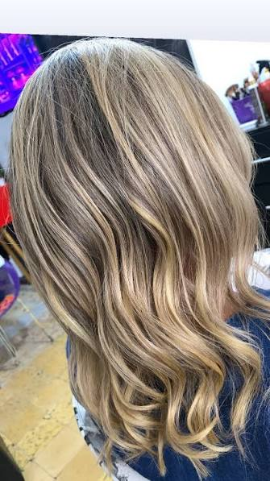

Tinte completo
- Cambio total de color.
- Incluye aplicación pareja.
- Recomendado para tonos uniformes.
Desde Bs 80
ReservarServicios de color para renovar el cabello o mantener un tono parejo.

Desde Bs 80
Reservar
Desde Bs 50
ReservarDesde Bs 90
Reservar